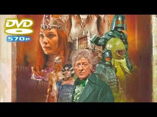
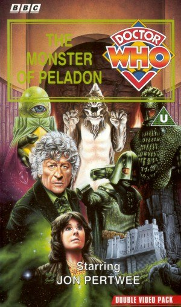
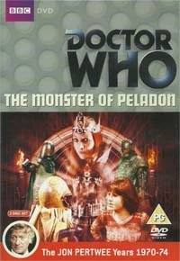
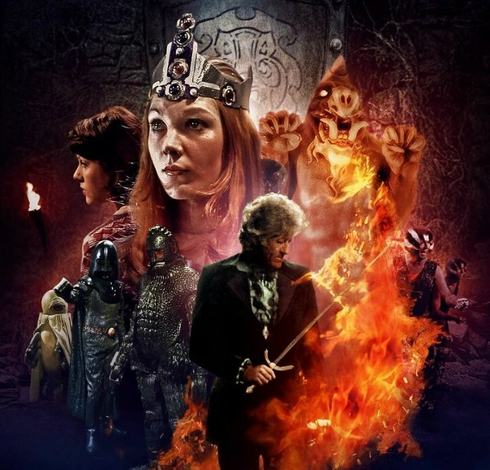
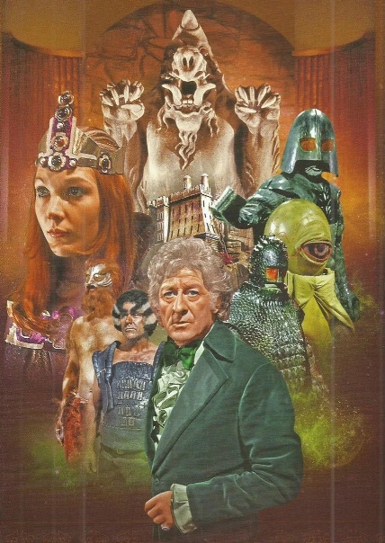

помощник
Субтитры: Русские и Английские |  |
|---|
| Все эпизоды сохранились в цвете (видеокассета PAL 2") |
|---|
| помощник |
Доктор и Сара Джейн попадают на Пеладон спустя 50 лет после первого визита. Планетой теперь правит королева Талира, а в шахтах бастуют рабочие — Галактическая Федерация требует поставок минерала, и условия труда стали невыносимы. В туннелях появляется призрак священного зверя Аггедора, убивающий шахтёров и сеющий панику. Альфа Центавра, снова в роли дипломата Федерации, пытается удержать ситуацию от взрыва. Доктор выясняет, что за беспорядками стоит заговор с участием Ледяных Воинов — и использует их уязвимость к теплу, чтобы сорвать план. Последнее появление Ледяных Воинов в классическом сериале — следующий раз они вернутся только в 2013 году.
 VHS - январь 1996 |  DVD+Boxset - 4 января 2010 * Версия в нашей группе |
|---|

